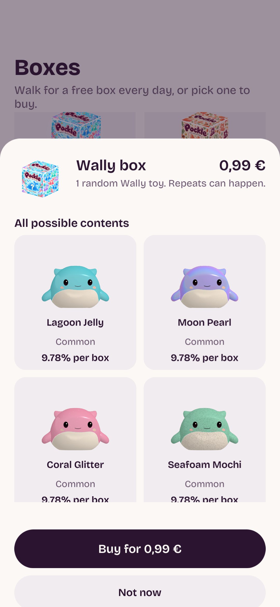
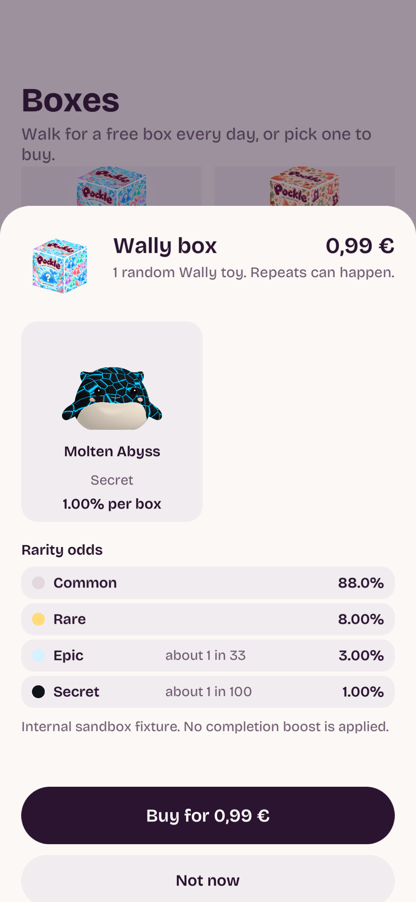
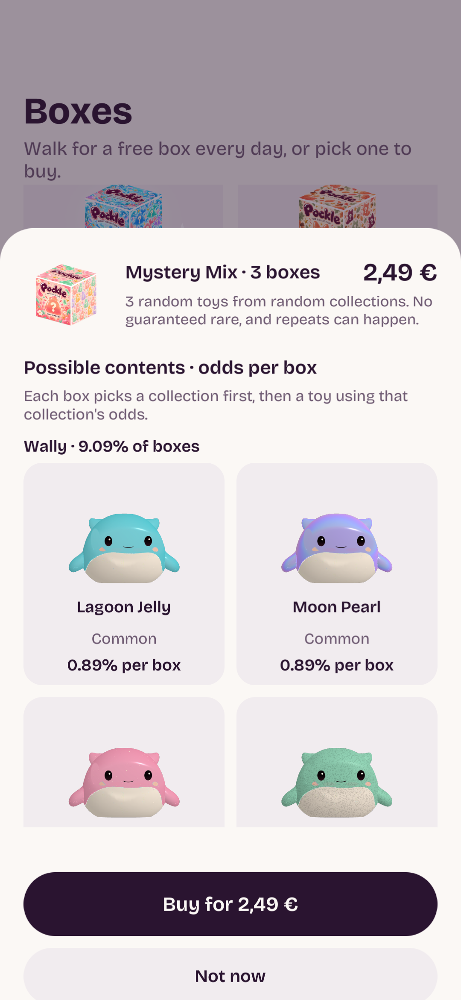
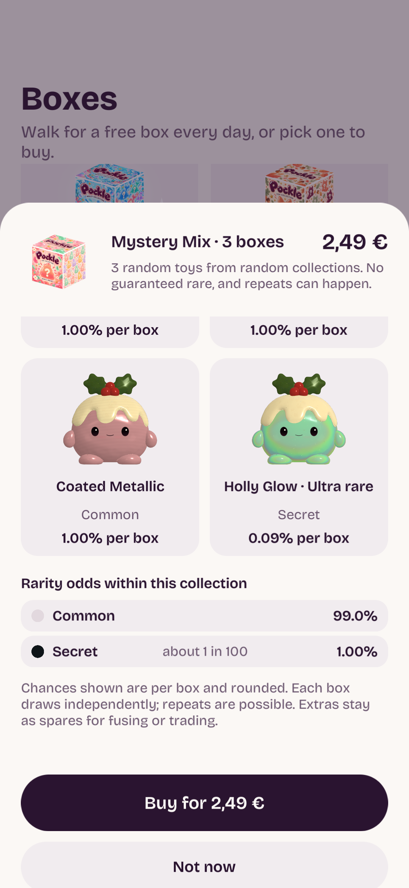

Collection box · all finishes

Tap a box to browse every eligible finish, its rarity and its chance per box. Mystery Mix includes the chance of selecting each collection. Opening the gallery never starts payment or awards a toy.
Native Unity portrait captures at a390-point layout. Prices are localized UI fixtures; probabilities match the current sandbox policy. The real app uses each store’s own price string and the server quote. Production editions are not issued by this sandbox.




Verified:54 focused native UI tests,15 final checkout tests,9Deno security tests, portable/source checks and local plus real transactional server checks. No new phone build installed yet.